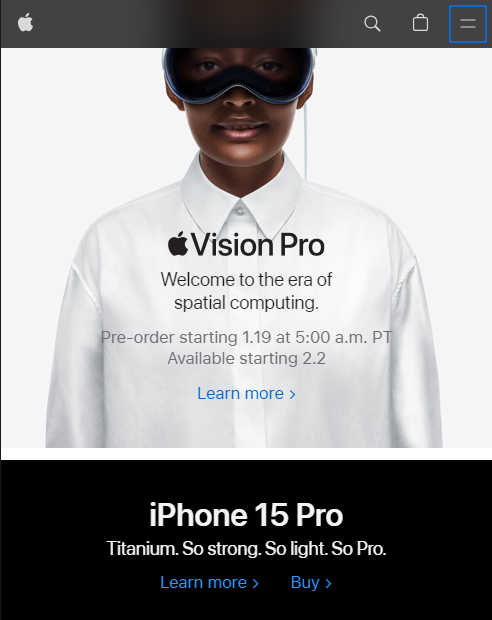

Visual Hierarchy
Apple Inc.
apple.com Apple's website is a great example of visual hierarchy. The main product or promotion is often highlighted with a large image or bold text, immediately drawing the user's attention. Subsequent sections and information are presented in a structured manner, guiding the user's focus from the most important to the least important elements.
White Space and Clean Design
Google's homepage is a classic example of clean design with ample white space. The focus is on the search bar, surrounded by white space, creating a clutter-free and minimalist interface. The simplicity and use of white space contribute to a visually pleasing and user-friendly design.
PARC - Contrast
Nike
nike.comNike's website effectively utilizes contrast in various elements such as color, typography, and imagery. The use of vibrant colors on a clean and neutral background helps to draw attention to specific products or promotions. Bold typography for headlines and clear product images contribute to a visually appealing contrast, enhancing the overall user experience. The use of contrast makes key information and call-to-actions easily distinguishable.